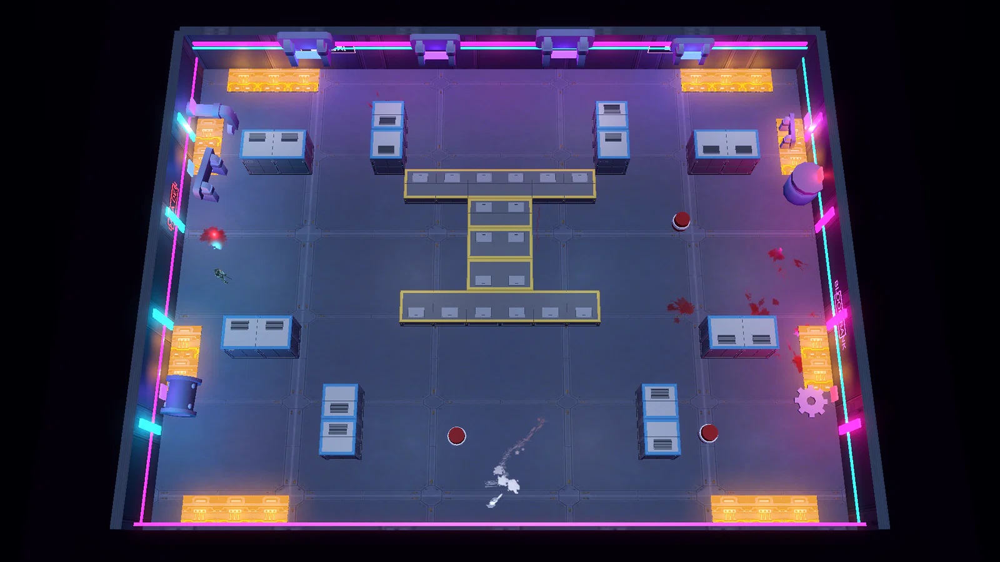
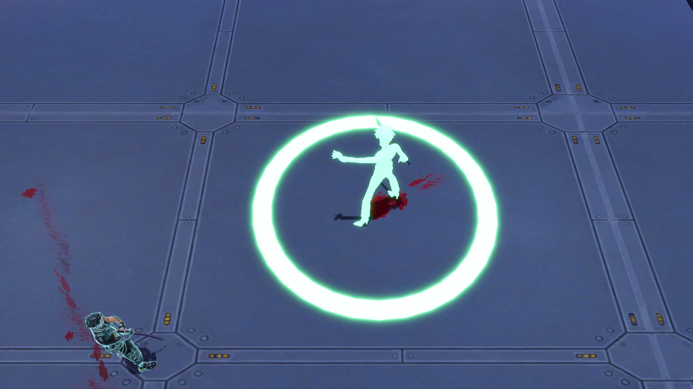

Edgerunners
작업 내역
두 달 동안의 개발 과정과 되돌린 결정, 플레이하며 바꾼 것.

작업 내역
EDGE
RUNNERS
개발 과정, 되돌린 결정, 플레이하며 바꾼 것.
62일 동안 무엇을 왜 바꿨는지 정리했다.
장대규
1인 개발, Godot 4.7.2, 2026.08.21 – 10.21
기획서에서 뺀 개발 과정, 되돌린 결정, 플레이하며 바꾼 것을 따로 모은 자료입니다.
이 자료에 담은 것
근거 문서
- 개발 타임라인: 작업 기록 355개를 구간별로 요약했다.
- 결정 로그: 결정 23개와 사이버웨어 레벨 결정 기록.
- 10-07 중간 평가와 10-21 재점검.
- 제안서 세 개: 보스전 개선, 사이버웨어 레벨과 숙련도, 아트.
기획서와 나눈 기준
- 기획서에는 지금 게임의 설계와 그 이유만 남겼다.
- 날짜, 예전 수치, 바꾼 과정, 되돌린 결정은 이 자료로 옮겼다.
01 개발 타임라인
62일 동안의 작업을 여덟 구간으로 나눴다
62
일 (08.21 – 10.21)
355
작업 기록
215
커밋 (레포 분리 뒤)
23
결정 기록
46
08.21–30
개발 도구
저장할 때마다 바뀐 칸을 기록하는 맵 편집기를 만들었다.
54
08.31–09.03
공격 예고
공격 예고 규칙 1차안과 사이버웨어 1~6단계를 넣었다.
32
09.04–07
피드백 반영
사이버웨어 부위를 6개에서 8개로 늘리고 속성을 넣었다.
35
09.09–20
손그림 레벨
손그림 전투방 둘을 격자 도면으로 옮겼다.
36
09.22–10.08
성장 재설계
사이버웨어 성장을 트리에서 레벨로 바꿨다.
59
10.09–12
타격감과 웹
웹 빌드 텍스처를 650MB에서 70MB로 줄였다.
64
10.13–17
보스전 재설계
보스에 모션 규칙과 2페이즈, 처형을 넣었다.
29
10.18–21
상태 이상
플레이어 상태 이상을 넣고 튜토리얼을 다시 만들었다.
막대는 구간마다 남긴 작업 기록 수다.
EDGERUNNERS 작업 내역
02
구간마다 작업의 중심이 달랐고, 보스전을 다시 만든 구간에 기록이 가장 많습니다.
구간별 작업 기록
| 구간 | 기간 | 기록 수 | 주요 작업 |
|---|---|---|---|
| 1 | 08-21 ~ 08-30 | 46 | 맵 편집기, 튜닝 패널, 카메라 각도, 첫 튜토리얼 |
| 2 | 08-31 ~ 09-03 | 54 | 공격 예고 규칙, 환경 장치 역할 분담, 사이버웨어 1~6단계, 회차 |
| 3 | 09-04 ~ 09-07 | 32 | 피드백 문서 반영, 속성, 레포 분리 |
| 4 | 09-09 ~ 09-20 | 35 | 손그림 전투방, 코칭 컷, 바닥 함정 삭제, 공격 예고 규칙 2차안 |
| 5 | 09-22 ~ 10-08 | 36 | 사이버웨어 트리에서 레벨로, 이동속도 개편, 대시 거리 고정, 경험치 측정 |
| 6 | 10-09 ~ 10-12 | 59 | 적 수 조정, 사망 연출, 넷러너 빌드, 웹 빌드 준비 |
| 7 | 10-13 ~ 10-17 | 64 | 보스 개선안, 보스 모션 규칙, 2페이즈, 처형 |
| 8 | 10-18 ~ 10-21 | 29 | 받는 피해 체계, 상태 이상, 속성 적과 드론, 튜토리얼 재설계 |
기록 방식
- 작업 하나를 기록 하나로 남겼다.
- 기록마다 요청, 바꾼 내용과 이유, 일부러 하지 않은 것을 적었다.
- 그중 설명할 만한 결정 23개는 결정 로그로 따로 옮겼다.
- 09-28 ~ 10-04는 기록이 없다.
기록이 많았던 때
02 수치 변경 이력
주요 수치는 이렇게 바뀌었다
카메라 기울기
08-24 ~ 27
-59°
-72°
네 번 바꾼 끝에 캐릭터가 바라보는 방향을 알아볼 수 있는 각도로 정했다.
이동속도 (m/s)
10-06
7.0
5.25
기본 이동속도를 25%가량 낮췄다.
대시 거리
10-07
4.76m
3.5m
엄폐물 한 칸을 넘는 거리로 고정했다.
웨이브당 적 수
10-07 ~ 10
4~8
7~9
14~18명으로 늘렸다가 너무 많아서 절반으로 줄였다.
보스 체력
10-09 ~ 10
1200
2000
3000으로 올렸다가 예비동작을 늘리면서 낮췄다.
전기 발판
09-16 ~ 10-20
주기
항시 켜짐
지금은 0.3초마다 7.8씩, 캐릭터마다 따로 계산한다.
EDGERUNNERS 작업 내역
03
주요 수치는 한 번에 정하지 않고, 플레이와 측정 결과를 보고 여러 번 고쳤습니다.
바뀐 과정
| 항목 | 변경 순서 | 이유 |
|---|---|---|
| 카메라 기울기 | -59° → -47° → -52° → -82° → -72° | 네온 벽, 측면, 머리 위주로 차례로 바꾸다가 캐릭터 방향을 알아볼 수 있는 각도로 정했다 |
| 대시 거리 | 6.8m → 4.76m (09-05) → 3.5m 고정 (10-07) | 엄폐물 한 칸(0.8 + 2 + 0.5 = 3.3m)을 넘는 거리 |
| 웨이브당 적 수 | 4~8 → 14~18 → 7~9 | 늘렸다가 너무 많아서 절반으로 줄였다 |
| 보스 체력 | 1200 → 3000 → 2000 | 우클릭 연타로 바로 처치돼서 올렸고, 예비동작을 늘리면서 낮췄다 |
| 전기 발판 | 주기 → 항시 켜짐 (09-16) → 캐릭터마다 따로 계산 (10-20) | 기다리기만 하는 플레이, 빨리 걸으면 틱 사이로 빠져나가는 문제 |
함께 맞춘 수치
- 달리기는 이동속도의 ×1.4로 7.35다.
- 대시 속도는 이동속도의 2.1배라서 기본 11.0m/s다.
- 근접 적의 추격 속도는 6.4에서 5.28로 낮춰 플레이어와 같게 했다(10-09).
- 적 수를 줄일 때 마리당 처치 보상을 나눠 성장 속도는 그대로 두었다.
그 밖의 수치 변경
| 항목 | 변경 |
|---|---|
| 메딕 | 체력 30 → 90, 회복 8 → 15%/초 (10-13) |
| 받는 피해 감소 | 근접 빌드 89% → 최대 60% (10-18) |
| 피격 무적 | 1.0 → 0.5초 (10-18) |
| 회차 배율 | 회차마다 체력 +0.35, 공격 +0.20 → +0.5, +0.3 (10-20) |
03 결정 로그
결정마다 네 항목을 기록했다
결정 23개마다 맨 위에 지금도 유효한지를 적었다.
유지 18
바뀜 3
뒤집힘 2
무엇을
무엇을 바꿨나
왜
무엇이 문제였나
버린 것
이 선택으로 못 하게 된 것
확인
어떻게 확인했나
뒤집힌 결정도 지우지 않았다.
무엇을 알게 되어 뒤집었는지 같이 기록했다.
예시: 결정 14 (10-08)
지금: 유지
경험치는 측정한 뒤에 정했다
무엇을
봇으로 한 판을 돌려 보니 약 620XP가 쌓여 첫 판 중반에 트리가 다 찼다.
그래서 비용과 요구치를 올린 뒤 명상(스킬) 트리를 넣었다.
왜
설계 때 잡은 한 판 40~60킬이, 전날 방당 적 수를 늘리면서 이미 맞지 않게 됐다.
버린 것
첫 판의 성장.
명상은 첫 판에는 잠겨 있다.
확인
바꾼 수치로 한 판 경험치를 다시 측정해서 맞췄다.
EDGERUNNERS 작업 내역
04
결정 로그에는 "왜 그렇게 했나"와 "무엇을 포기했나"에 답이 되는 결정만 골라 기록했습니다.
지금 상태 표시
| 표시 | 뜻 | 개수 |
|---|---|---|
| 유지 | 그대로 게임에 있다 | 18 |
| 바뀜 | 기본 구조는 남고 세부가 달라졌다 | 3 |
| 뒤집힘 | 반대 방향으로 바꿨다 | 2 |
뒤집힌 결정
- 7번: 전기 위에 서 있으면 플레이어도 경직 → 상태 이상 오작동에 통합
- 18번: 적의 엄폐 AI → 삭제, 엄폐물은 플레이어만 쓴다
바뀐 결정
- 3번: 우클릭 해금 시점이 3단계에서 2단계로
- 8번: 신화 보상 확률 25% → 50%, 두 번 연속 안 나오면 세 번째에 반드시 나온다
- 12번: 사이버웨어 성장이 트리에서 레벨로, 다시 독립된 줄로
예시로 든 14번
- 설계 때 전제한 한 판 40~60킬은 방당 적 수를 늘리면서 맞지 않게 됐다.
- 봇으로 측정하니 한 판에 약 620XP가 쌓였다.
- 지금은 다음 레벨까지 30 + 6 × 레벨이 필요하고, 상한은 28이다.
쓰는 원칙
- 길면 읽지 않게 되므로 항목마다 네 줄로 쓴다.
- 시간순 원본은 작업 기록에 모두 있고, 결정 로그에는 설명할 만한 것만 옮겼다.
- 뒤집힌 결정도 지우지 않는다.
04 전투방 수정 이력
보상 좌대 위치 때문에 도면의 중심 구조가 빠져 있었다


왼쪽은 손그림, 오른쪽은 지금 게임의 바람개비 전투방이다.
도면으로 만든 방을 손그림 옆에 놓고 나서야 차이를 알았다.
설계는 그대로 두고 편집기 쪽을 고쳤다.
v1
좌대가 항상 방 한가운데 있어서, 그 위치를 비우느라 도면의 중심 구조(바람개비 십자, I자)를 빼 버렸다.
v2
격자에 보상 위치 칸 F를 만들어 좌대를 아래로 옮기고, 가운데를 손그림대로 채웠다.
v3
방을 32×26m에서 40×30m로 키웠다.
늘어난 공간은 벽 길이와 뒤로 돌아가는 길에 썼다.
EDGERUNNERS 작업 내역
05
도면으로 만든 방을 손그림과 비교하는 과정에서, 편집기의 기본 동작이 설계를 바꿔 놓은 것을 찾았습니다.
고친 순서
- v1좌대 자리를 비우느라 가운데 구조가 빠졌다
- v2보상 위치 칸 F로 좌대를 아래로 옮겼다
- v332×26m에서 40×30m로 키웠다
원인과 해결
- 보상 좌대는 항상 방 한가운데에 섰다.
- 그 자리를 비워 두느라 바람개비 십자와 I자 구조가 빠졌다.
- 설계는 그대로 두고 편집기에 보상 위치 칸을 추가해서 해결했다.
v3에서 방을 키운 이유
- 32×26m에서는 문 앞 통로 넷과 좌대가 방의 절반을 차지했다.
- 그래서 바람개비 벽이 짧고 뭉툭했다.
- 40×30m는 손그림 비율(4:3)에 맞춘 크기다.
버린 것
- 좌대는 항상 가운데라는 단순함.
- 이제 방마다 좌대 위치를 지정해야 하고, 지정하지 않으면 가운데에 선다.
05 되돌린 결정 1
바닥 함정을 삭제하고 전기 발판을 항상 켜 두었다
바닥 함정
삭제 (09-16)
08-31에 지나갈 경로를 고민하게 만드는 장치로 넣었다.
플레이어가 고민하는 내용이 전기 발판과 같아져서 완전히 삭제했다.
전기 발판
항상 켜짐으로 변경 (09-16)
켜짐과 꺼짐 주기가 있을 때는 건널 타이밍을 고민하지 않고 기다리기만 했다.
측정해 보니 대시로 3칸(6m)까지는 피해 없이 건넜다.
함정이 길을 막지 않아서 지나갈 틈을 따로 두지 않았다.
그래서 건너는 것은 피해 없이 두고, 오래 머무는 쪽에 불이익을 줬다.

지금 대시(3.5m)로 전기 함정을 건널 때 받는 피해
0
두 칸(4m)
11.6
세 칸(6m)
23.2
네 칸(8m)
EDGERUNNERS 작업 내역
06
바닥 장치는 전기 함정 하나로 정리했고, 전기 함정은 건너는 것보다 오래 머무는 것에 불이익을 주는 장치가 됐습니다.
바닥 함정의 경과
- 08-31 추가경로를 고민하게 만드는 장치
- 09-07 피해 상향5에서 18로. 5는 총알 한 발(8)보다 작았다
- 09-16 삭제고민하는 내용이 전기 함정과 같았다
전기 발판의 주기를 없앤 이유
- 꺼짐 2.2초, 예고 0.8초, 켜짐 1.4초의 주기가 있었다.
- 건널 타이밍을 고민하게 하려던 의도와 달리 기다리는 플레이만 남았다.
- 버린 것: 타이밍 판단과 번갈아 켜지는 연출.
대시로 건널 때 받는 피해
| 일렬로 이은 칸 | 10-07 측정 | 10-21 측정 |
|---|---|---|
| 두 칸 (4m) | 0 | 0 |
| 세 칸 (6m) | 5.3 | 11.6 |
| 네 칸 (8m) | 16 | 23.2 |
10-20에 밟는 순간 첫 틱이 들어가게 바꾸면서 값이 늘었다.
측정 결과 함정이 길을 막지 않아서, 맵에 지나갈 틈을 따로 두지 않았다.
머무는 쪽의 불이익
- 위에 서 있으면 0.3초마다 7.8의 피해를 받는다.
- 전기 누적이 45를 넘으면 오작동에 걸려 2.5초 동안 대시를 쓸 수 없다.
- 함정은 늘 한 칸(2m) 타일이고, 일렬로 세 칸 이상 붙은 곳은 대시로 건너도 피해를 받는다.
06 공격 예고 표시 수정
공격 예고 범위를 실제 판정에 맞췄다
범위: 둘레 링에서 전방 부채꼴로
이전: 둘레 링, 점선이 실제 판정
지금: 전방 2.3m, 70°
근접병의 실제 판정은 전방뿐인데, 둘레에 링을 표시해서 등 뒤도 맞을 것처럼 보였다.
지금은 실제로 닿는 거리만큼 전방 부채꼴을 표시한다.
알파: 0.34에서 0.16으로
0.34, 처음 값
0.16, 지금 값
부채꼴 하나만 볼 때 보기 좋은 0.34로 정했더니, 적 다섯 명에게 둘러싸이면 화면 전체가 주황색으로 덮였다.
게임 화면에서 확인하고 0.16으로 낮췄다.
EDGERUNNERS 작업 내역
07
예고 표시가 실제 판정과 다르면 플레이어가 잘못 배우기 때문에, 표시 범위와 겹침 정도를 실제 전투 상황에 맞췄습니다.
09-20에 바꾼 값
| 항목 | 이전 | 지금 |
|---|---|---|
| 근접 예고 모양 | 둘레 링 | 전방 부채꼴 |
| 근접 예고 거리 | 4.8m | 2.3m |
| 부채꼴 각도 | 90° | 70° |
| 알파 | 0.34 | 0.16 |
| 발광 배율 | 1.0 | 0.22 |
2.3m의 근거
- 내딛기 1.2m와 칼 반경 1.1m를 더한 거리다.
- 실제로 닿는 거리보다 넓게 표시하지 않는다.
알파를 정한 기준
- 부채꼴 하나가 아니라 여러 개가 겹치는 상황을 기준으로 정했다.
- 처음 값에서는 부채꼴 다섯 개가 겹치자 화면 전체가 주황색으로 덮였다.
- 슬라이드의 오른쪽 두 이미지는 같은 부채꼴 다섯 개를 겹친 도해이고 게임 화면은 아니다.
같은 날 바꾼 색 규칙
- 공격 예고 색을 범위(주황)와 판정 시점(빨강)으로 나눴다.
- 전에는 한 색이 두 의미를 같이 나타내서, 적 셋에게 둘러싸이면 붉은 영역이 하나로 겹쳐 보였다.
07 되돌린 결정 2
사이버웨어 성장 구조는 두 번 바뀌었다
09-22까지
트리
개조형 가지를 골라 키웠다.
잘못 고른 가지는 보상이 랜덤이라 되돌릴 수 없었다.
09-22 ~ 10-05
레벨
Lv1
Lv2
Lv3
가지를 없애고 한 줄을 Lv1에서 Lv3로 키운다.
10-05에 개조형을 레벨 안에 통합하자 15줄이 남았다.
10-06부터
독립된 줄과 레벨
개조형 열 개를 독립된 줄로 되살려 25줄이 됐다.
레벨업은 새 기능을, 숙련도는 수치를 올린다.
이때 버린 것은 숫자만 오르는 레벨이다.
Lv2와 Lv3를 전부 플레이 방식이 달라지는 효과로 다시 만들었다.
EDGERUNNERS 작업 내역
08
트리에서 레벨로 바꾼 결정은 유지했고, 레벨에 통합하면서 줄어든 종류만 다음 날 되살렸습니다.
바뀐 순서
- 09-22 트리에서 레벨로틀린 선택을 없앴다
- 10-05 개조형 통합15줄만 남았다
- 10-06 독립된 줄 복원개조형 열 개를 되살려 25줄
- 10-06 Lv2, Lv3 재작업전부 새 기능으로
트리를 버린 이유
- 가지가 나뉘면 잘못 고를 수 있다.
- 보상이 랜덤이라 잘못 고른 가지를 되돌릴 수 없다.
- 레벨 구조에는 틀린 선택이 없어서 보상이 랜덤이어도 빌드가 막히지 않는다.
레벨업과 숙련도의 역할
| 구분 | 올려 주는 것 |
|---|---|
| 레벨업 (Lv2, Lv3) | 새 기능 |
| 숙련도 | 수치 |
숫자만 오르는 레벨은 플레이할 때 달라지는 것이 없어서 수치는 숙련도로 옮겼다.
지금 상태
- 줄마다 바뀐 경위는 결정 로그 부록에 날짜순으로 남겼다.
08 보스전 개선안
10-14 보스 개선안의 반영 결과

2페이즈 전환 연출 장면이다.
보스 체력이 50%가 되면 2페이즈로 넘어간다.
반영한 것
칼을 든 채 멈추는 공격 예고, 패턴마다 다른 모션
무릎 꿇는 체간 붕괴, 체력 50% 전환 연출
플레이어 행동 대응, 산데비스탄 발동 거리 11m → 6m
체간 상시 감소, 1초 피해 상한, 전기 장판
다른 형태로 반영한 것
분신 협공 → 2페이즈 어둠 기습 (다섯 번 수정)
반영하지 않은 것
총 반동, 저격총, 움찔, 옆걸음
등장 연출, 사망 연출, 깨지는 엄폐물
제안에 없던 것
보스 잡기 공격, 96발 난사, 2페이즈 발차기
체간이 무너지면 F로 처형, 다운된 보스 무적
EDGERUNNERS 작업 내역
09
보스전 개선은 코드를 고치기 전에 원인부터 제안서로 정리하고, 방향을 정한 뒤 단계별로 반영했습니다.
제안서에서 찾은 원인
- 휘두르는 모션이 0.4초 예고 안에 끝나서 모션과 타격 시점이 어긋났다.
- 산데비스탄 패턴은 11m 넘게 떨어졌을 때만 나와서 실제 발동률이 0%였다.
- 체간이 자연 감소하지 않아 연타만 하면 무너졌다.
- 2페이즈는 수치 변화뿐이라 언제 페이즈가 바뀌었는지 알 수 없었다.
10-15에 정한 방향
- 보스의 성격: 칼과 총을 섞어 쓴다.
- 체간: 매초 조금씩 감소한다.
- 피해 상한을 둔다.
- 새 패턴: 카타나, 리볼버, 수류탄을 섞어 매번 다르게 쓴다.
반영 순서
- 10-14 제안서원인 정리, 연타 공략 차단
- 10-15 1차공격 예고 모션, 체간 감소, 피해 상한, 혼합 연계
- 10-15 ~ 16 2페이즈전환 연출, 전기 장판, 어둠 기습
- 10-17 처형체간이 무너진 보스를 F로 처형
막은 공략과 대신 넣은 것
연타 공략
- 다섯 자루 연타로 초당 765 피해를 넣어 보스를 순식간에 처치하는 공략이 있었다.
- 10-14에 측정해서 막았다.
넣지 않은 안의 대안
- 총 반동, 저격총, 움찔, 옆걸음 대신 피격 연출을 베기, 돌격, 발차기 종류별로 나눴다(10-17).
09 되돌린 결정 3
적의 엄폐 AI는 측정 후 삭제했다
1
높은 엄폐물 뒤에만 숨게 했다.
2
낮은 엄폐물 뒤에서 웅크리는 동작을 더했다.
3
벽에 기대는 동작도 넣었다.
4
실제 게임의 맵 일곱 방에서 측정했다.
5
10-16에 전부 삭제했다.
버린 것
적이 엄폐물을 쓰는 전투.
지금 엄폐물은 플레이어만 쓴다.
숨을 위치를 찾은 원거리병
4
/ 14명
채운 원은 숨을 위치를 찾은 4명이다.
나머지 10명은 벽 앞에서 제대로 움직이지 못했다.
EDGERUNNERS 작업 내역
10
절반도 제대로 동작하지 않는 기능은 계속 다듬기보다 빼는 쪽을 골랐습니다.
측정 방법
- 실제 게임에서 맵 일곱 방을 돌려 측정했다.
- 대상은 그 방들에 나온 원거리병 14명이다.
- 고친 기간은 10-15부터 10-16까지다.
결정 기록 (18번)
| 항목 | 내용 |
|---|---|
| 지금 | 뒤집힘 |
| 무엇을 | 원거리병이 엄폐물 뒤에 숨는 AI를 세 번 고친 뒤 삭제 |
| 왜 | 14명 중 4명만 숨을 위치를 찾았다 |
| 버린 것 | 적이 엄폐물을 쓰는 전투 |
같은 기준으로 뺀 것
- 바닥 함정: 플레이어가 고민하는 내용이 전기 함정과 겹쳤다.
- 10-21 재점검에서도 적 엄폐 AI는 줄인 기능으로 기록됐다.
10 튜토리얼 변경 이력
튜토리얼은 바깥 네 방에서 숲길 세 단계로 바뀌었다
08-27
바깥 네 단계 튜토리얼
09-10
목표 표시와 코칭 컷
09-15
우클릭 잠금, 좌대에서 카타나 줍기
10-09 ~ 10
공격 잠금, 회피 코칭을 두 번으로 나눔
10-21
손그림 세 장대로 다시 만듦
이전: 바깥 네 방
구성 곧은 복도와 접근방
우클릭 3단계에서 해금
지금: 숲길 세 단계
구성 굽은 숲길, 접근방 없이 정문에서 끝
우클릭 2단계에서 해금
단계마다 가르치는 것을 하나로 줄이려고 다시 만들었다.
곧은 복도라서 쉬웠던 레벨 작업을 버리고, 걸을 수 있는 칸을 칠하는 길 빌더를 새로 만들었다.
EDGERUNNERS 작업 내역
11
튜토리얼은 다섯 번 고쳤고, 마지막에는 단계마다 가르치는 것을 하나로 줄이는 방향으로 다시 만들었습니다.
고친 이유
09-10 목표 표시와 코칭 컷
- 추적 대상은 원래 있었지만 게임 안에서 알려주지 않았다.
- 코칭 컷은 공격 직전에 게임을 멈추고 배울 키 하나만 입력받는다.
09-15 우클릭 잠금
- 게이지 없이 쓰는 키로 먼저 익히면 나중에 게이지를 설명하기 어렵다.
10-09 ~ 10 회피 코칭 분리
- 한 번에 설명하면 팔을 들자마자 Space를 눌러서, 기다렸다가 피하는 타이밍이 남지 않았다.
- 처음에는 팔을 드는 예비동작을, 다음에는 휘두르기 0.15초 전에 누르는 것을 보여 준다.
10-21 재설계
- 손그림 세 장(단계마다 길, 적, 순서)을 바탕으로 만들었다.
- 수류탄은 수류탄으로만 맞힐 수 있는 적을 배치해서, 다른 방법이 없는 상황에서 배운다.
- 접근방은 뺐다.
같은 날 넓힌 동선
| 구역 | 걸을 수 있는 범위 |
|---|---|
| 자갈길 위쪽 | 자갈 끝에서 3.5m |
| 자갈길 아래쪽(카메라 쪽) | 자갈 끝에서 5.0m |
| 공터 | 6.0m |
- 보이지 않는 벽보다 충돌이 있는 덤불에 먼저 닿게 했다.
- 쓰러진 나무 앞뒤에는 5m 넘는 숲을 남겨 돌아갈 수 없게 했다.
11 플레이하며 바꾼 것
직접 플레이하며 찾은 문제를 이렇게 바꿨다
항목
플레이해 보니
바꾼 것
전기 발판
10-20
빨리 걸으면 피해를 받지 않고 지나갔다.
캐릭터마다 따로 틱을 세고, 밟는 순간 첫 틱이 들어가게 했다.
튜토리얼 숲길
10-21
보이지 않는 벽이 길 폭을 좁혀 동선을 강제하는 느낌이었다.
자갈길 밖 숲 바닥까지 걸을 수 있게 넓혔다.
엘리트 돌진
10-21
돌진하던 엘리트 근접병이 전기 발판에서 경직되어 멈췄다.
돌진 중에는 전기 발판에서 피해만 받고 경직되지 않게 했다.
총 넉백
10-21
총에 맞은 적이 너무 많이 밀려났다.
모든 총의 넉백을 절반으로 줄였다(피스톨 5 → 2.5, 샷건 14 → 7).
불 드론 화염구
10-21
화염구가 쏜 방향으로 곧게만 날아가 쉽게 피할 수 있었다.
플레이어 쪽으로 초당 160°까지 휘게 하고, 속도는 9에서 7.5로 낮췄다.
체인소드
09-06
초당 피해를 162 → 106 → 85로 낮춰도 너무 강했다.
부채꼴을 95°에서 55°로 좁혀 동시에 맞는 적을 4명에서 2명으로 줄였다.
EDGERUNNERS 작업 내역
12
플레이하며 어색했던 점은 원인부터 찾아 고쳤고, 의도한 규칙은 그대로 지키는 방향으로 범위를 정했습니다.
고치면서 그대로 둔 것
총 넉백 변경
| 무기 | 이전 | 지금 |
|---|---|---|
| SMG | 0.9 | 0.45 |
| 피스톨 | 5 | 2.5 |
| 스나이퍼 | 9 | 4.5 |
| 스나이퍼 조준 사격 | 16 | 8 |
| 샷건 | 14 | 7 |
넉백 사이버웨어(×1.2)를 장착해도 총에 맞은 적은 넘어지지 않는다.
원인을 따로 찾은 경우
전기 발판
- 발판 하나에 타이머가 하나뿐이라, 빨리 걷는 캐릭터가 두 틱 사이로 빠져나갔다.
- 지금은 캐릭터마다 0.3초마다 7.8씩 따로 계산한다.
체인소드
- 초당 피해를 낮춰도 강하다는 문제가 계속됐다.
- 원인은 한 번에 맞는 적의 수였다.
피하는 방법이 바뀐 것
불 드론 화염구
- 휘는 반지름이 약 2.7m라서 걸어서 비켜 가기로는 피하기 어렵다.
- 닿기 직전에 대시로 피한다.
튜토리얼 숲길
- 걸을 곳: 자갈 끝에서 위로 3.5m, 아래로 5.0m, 공터는 6.0m까지
- 보이지 않는 벽보다 충돌이 있는 덤불에 먼저 닿는다.
12 중간 평가
10-07 중간 평가의 문제를 2주 뒤 다시 점검했다
10-07에 지적한 문제
10-21 재점검 결과
판정
1
시스템 수에 비해 깊이가 부족하다
해킹 모드, 처형, 상태 이상이 늘었고 적 엄폐 AI는 뺐다.
일부 해결
2
레벨이 둘뿐이다
직접 그린 맵이 둘에서 여덟 개가 됐다.
해결
3
적 종류가 시스템 규모를 따라가지 못한다
새 적 대신 기존 적에 다른 위협 요소를 더했다.
해결
4
화면에 글자가 너무 많다
오른쪽 카드 목록은 지웠고 좌대 글자는 그대로다.
미해결
5
아직 아무도 끝까지 플레이하지 않았다
체크리스트는 비어 있지만 플레이 보고가 작업을 이끌었다.
일부 해결
6
움직임이 뻣뻣하다
Mixamo 클립과 래그돌, 무기별 처형을 넣었다.
개선
작업은 마감(10/15)을 넘겨 10-21까지 이어졌다.
EDGERUNNERS 작업 내역
13
중간 평가 본문은 그날의 기록이라 고치지 않고, 2주 뒤의 결과만 덧붙였습니다.
10-07 평가의 결론
- 시스템은 상용 로그라이트 세 개를 합친 만큼 많은데, 그 시스템을 받쳐 줄 방과 적은 부족했다.
- 남은 8일은 기능 추가보다 정리하고 보여 주는 데 쓰자는 결론이었다.
- 평가는 처음 플레이하는 사람과 심사자 두 입장에서 했다.
평가 당시
재점검에서 늘어난 것과 줄인 것
| 늘어난 것 | 줄인 것 |
|---|---|
| 해킹 모드 | 적 엄폐 AI (10-16) |
| 처형 | 버서크 후유증 (10-19) |
| 플레이어 상태 이상 | 오른쪽 강화 카드 목록 (10-20) |
| 아드레날린 부스터 | 첫 판의 명상(스킬) 잠금 |
계획대로 되지 않은 것
- 새 시스템을 넣지 않는다는 계획은 지키지 못했다(해킹 모드, 10-12).
- 플레이테스트 체크리스트는 아직 체크된 항목이 없고, 한 판 플레이 시간도 측정하지 않았다.
- 순서만 바꾸면 포트폴리오가 달라진다는 제안은 슬라이드 순서에 반영했다.
13 남은 과제
아직 정하지 않은 기획 과제가 남아 있다
좌대 글자 정리
지금
보상 좌대 위에 두세 줄짜리 글자가 그대로 떠 있다.
할 것
종류는 모양으로, 등급은 색으로 보여 주고 글자는 이름 한 줄로 줄인다.
성장 요소 정리
지금
한 판에서 다루는 성장 요소가 많다.
첫 판은 명상만 잠가 두었다.
할 것
스탯 보상 종류, 스킬 칸 수, Lv3가 나오는 방을 줄이는 안을 검토한다.
시야 안개
지금
기획만 해 두었다.
위에서 내려다보는 카메라라 벽 뒤의 적도 보인다.
정할 것
가려진 적의 표시 방식과 시야를 막는 대상, 눈 사이버웨어와의 연결.
처음부터 끝까지 플레이
지금
플레이테스트 체크리스트가 비어 있고, 한 판 플레이 시간도 재지 않았다.
할 것
새 게임으로 끝까지 플레이하며 막히는 곳과 죽는 이유를 고친다.
EDGERUNNERS 작업 내역
14
남은 과제는 10-07 중간 평가에서 아직 해결하지 못한 문제와, 기획만 해 두고 넣지 않은 시스템입니다.
과제와 출처
| 과제 | 출처 | 상태 |
|---|---|---|
| 좌대 글자 정리 | 10-07 평가 문제 4 | 미해결 |
| 성장 요소 정리 | 10-07 평가 문제 1 | 일부 해결 (첫 판 명상 잠금) |
| 시야 안개 | 사이버웨어 제안서 | 기획만 해 둠 |
| 처음부터 끝까지 플레이 | 10-07 평가 문제 5 | 일부 해결 |
성장 요소 정리
한 판에서 다루는 성장 요소
- 코인, 카드, 사이버웨어 레벨, 숙련도, 경험치와 스킬
10-07 평가에서 나온 줄일 후보
- 스킬 칸: 한 판에 두 칸을 못 산다면 숨긴다.
- 스탯 보상: 종류를 줄여 등급 색이 눈에 들어오게 한다.
- 사이버웨어 Lv3: ??? 방과 리퍼닥에서만 나오게 한다.
시야 안개
넣으려는 이유
- 벽이 정보까지 가려서 모퉁이 뒤에 무엇이 있는지 고민하게 만든다.
- 눈 사이버웨어에 다시 역할이 생긴다.
먼저 풀 문제
- 눈 사이버웨어가 없으면 적의 모션만 보고 피한다.
- 적이 가려지면 피할 단서가 없어진다.
- 해결안 후보: 예비동작에 들어간 적은 잠깐 드러낸다, 정예가 없는 방에만 깐다, 정예의 예비동작만 항상 보이게 한다.